16. Problems with worked solutions
习题与详细解答
Attempt each problem before reading its solution. Numerical questions use the teaching parameter set unless otherwise stated. The problems progress from direct balances to model criticism; the last category is essential for research rather than optional commentary.
请先独立作答，再阅读解答。除非另有说明，数值题均采用本书教学参数。题目从直接平衡逐步过渡到模型批判；对科研而言，最后一类能力是必要内容，而不是可有可无的补充。
16.1 Laplace pressure at three scales
三个尺度下的Laplace压力
Problem. Find the capillary pressure of clean spherical bubbles with radii 1, 10, and 100 micrometers for . At which scales is it small compared with approximately 100 kPa ambient pressure?
题目。当时，求半径分别为1、10和100微米的洁净球形气泡毛细压力。在哪些尺度下，它相对于约100 kPa环境压力较小？
Reference answer · original problem 1 / 原题参考答案
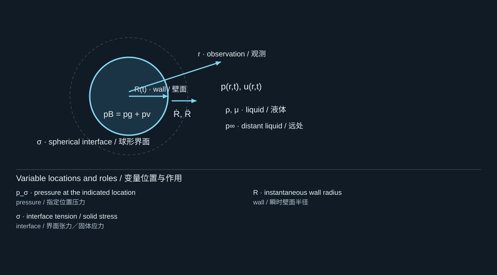
The diagram locates the physical system; its key lists the symbols in the formula. Read the definition in the surrounding derivation when a letter has different roles.
图示标出物理体系，图例列出公式中的符号。若某字母有多种作用，应以邻近推导中的定义为准。
Solution. Equation (1.1) gives 144, 14.4, and 1.44 kPa. It is dominant or comparable at 1 micrometer, a noticeable correction at 10 micrometers, and a small correction at 100 micrometers. “Small bubble” is therefore not a purely geometric description; it changes the pressure balance.
解答。由式(1.1)，结果为144、14.4和1.44 kPa。在1微米处，它占主导或至少与环境压力相当；在10微米处，它是明显修正；在100微米处，它较小。因此，“小气泡”不只是几何描述，还意味着压力平衡发生变化。
16.2 Where the liquid kinetic energy resides
液体动能分布在哪里
Problem. For spherical incompressible motion, what fraction of the total liquid kinetic energy lies outside , with ?
题目。对于球对称不可压缩运动，半径之外的液体动能占总液体动能多少，其中？
Reference answer · original problem 2 / 原题参考答案
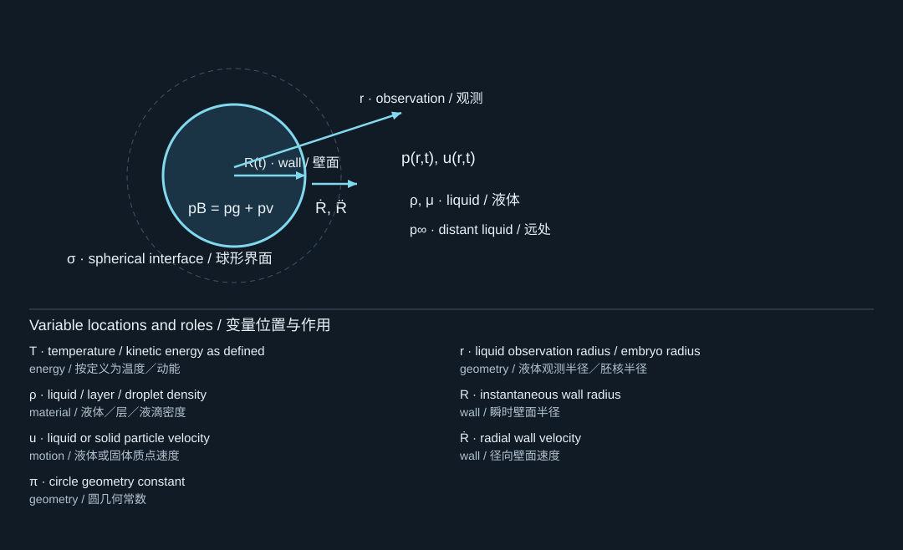
The diagram locates the physical system; its key lists the symbols in the formula. Read the definition in the surrounding derivation when a letter has different roles.
图示标出物理体系，图例列出公式中的符号。若某字母有多种作用，应以邻近推导中的定义为准。
Solution. Since , the energy outside a lower radius is proportional to . Therefore . Half the energy lies outside . A computational boundary only a few bubble radii away can alter the inertia substantially unless an appropriate exterior representation is used.
解答。由于，从下限向外积分的动能与成正比，因此。一半动能位于之外。因此，如果计算边界只距气泡几个半径，且未采用适当外域处理，就可能显著改变惯性。
16.3 Track a liquid particle
跟踪液体质点
Problem. Derive the relation between a liquid particle's radial position and the bubble radius.
题目。推导液体质点径向位置与气泡半径之间的关系。
Reference answer · original problem 3 / 原题参考答案
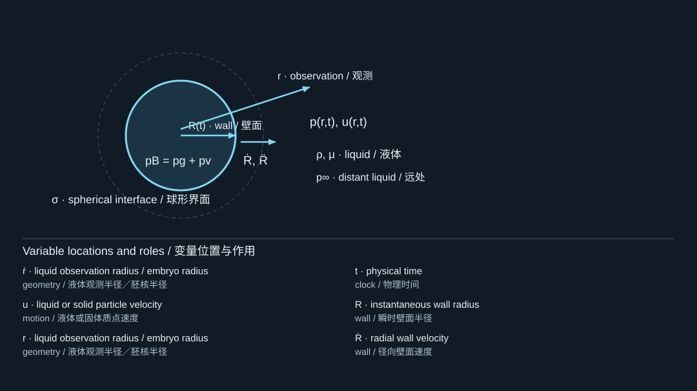
The diagram locates the physical system; its key lists the symbols in the formula. Read the definition in the surrounding derivation when a letter has different roles.
图示标出物理体系，图例列出公式中的符号。若某字母有多种作用，应以邻近推导中的定义为准。
Solution. Along a particle trajectory, . Multiply by to obtain . Thus . The relation expresses conservation of the liquid volume between the bubble and that material spherical surface.
解答。沿质点轨迹有，乘以得，因此。该关系表达了气泡与该物质球面之间液体体积守恒。
16.4 Diagnose a Bernoulli error
诊断Bernoulli推导错误
Problem. A student differentiates and substitutes as . What is missing?
题目。某同学对求导，并把代作。遗漏了什么？
Reference answer · original problem 4 / 原题参考答案
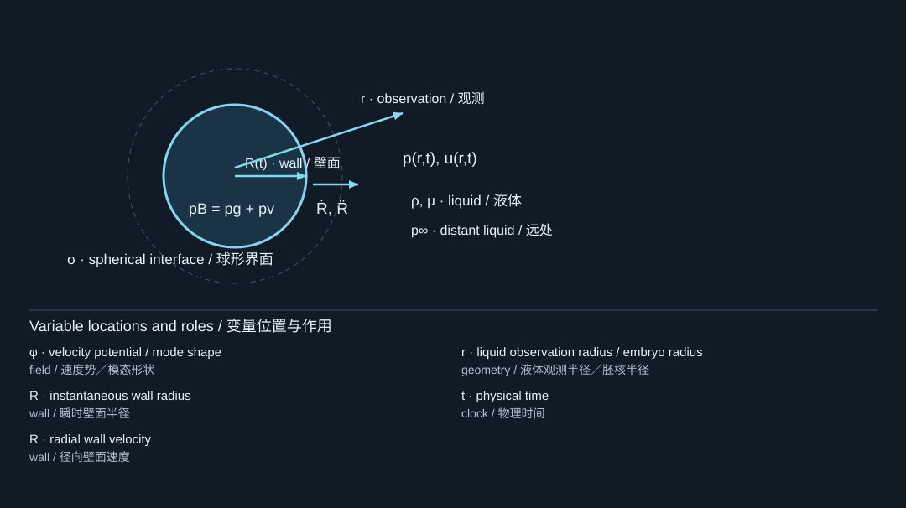
The diagram locates the physical system; its key lists the symbols in the formula. Read the definition in the surrounding derivation when a letter has different roles.
图示标出物理体系，图例列出公式中的符号。若某字母有多种作用，应以邻近推导中的定义为准。
Solution. The chain rule gives . Since , subtract from the total derivative. The correct partial derivative is , which produces the inertia coefficient after adding .
解答。链式法则给出。由于，应从全导数中再减去。正确偏导为，加上后即可得到惯性系数。
16.5 An isothermal Blake threshold
等温Blake阈值
Problem. Find the turning point for a reference gas nucleus of radius at , with and .
题目。对于下参考半径的气核，取、，求平衡曲线转折点。
Reference answer · original problem 5 / 原题参考答案
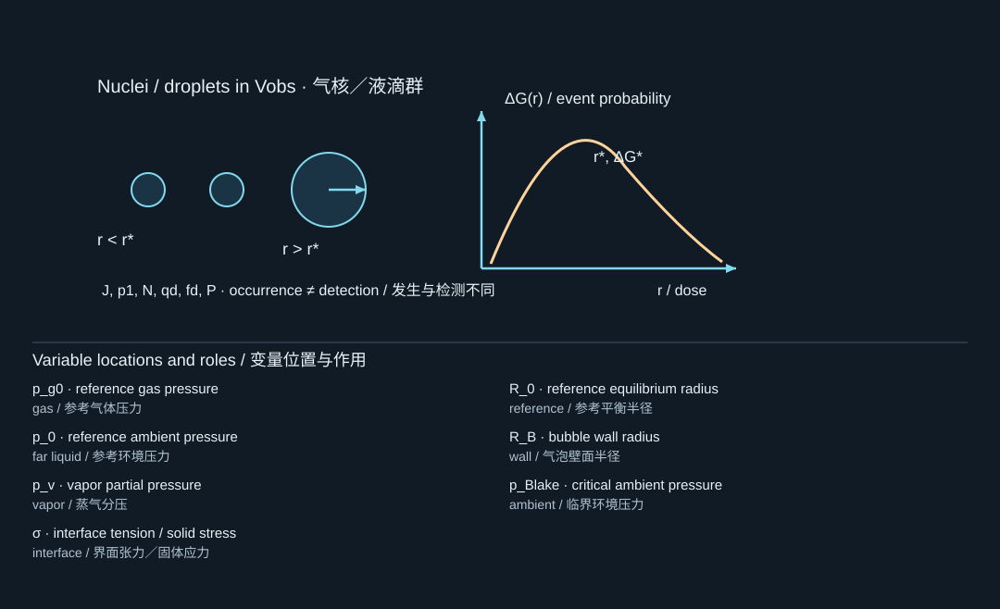
The diagram locates the physical system; its key lists the symbols in the formula. Read the definition in the surrounding derivation when a letter has different roles.
图示标出物理体系，图例列出公式中的符号。若某字母有多种作用，应以邻近推导中的定义为准。
Solution. First calculate . Equation (2.5) gives and absolute. This negative absolute pressure is a tensile metastable-liquid value within the model, not a negative gas pressure and not a universal measured inception threshold.
解答。先算得。由式(2.5)，得到和绝对压力。这个负绝对压力表示模型中亚稳液体的拉伸状态，不是负气体压力，也不是普适实测初生阈值。
16.6 Probability depends on observation volume
概率依赖观测体积
Problem. A spatially uniform, constant-rate nucleation process has 50% probability of at least one event in volume during time . What is the probability in volume during the same time?
题目。一个空间均匀、速率恒定的成核过程，在体积、时间内至少出现一次事件的概率为50%。同一时间内，在体积中的概率是多少？
Reference answer · original problem 6 / 原题参考答案
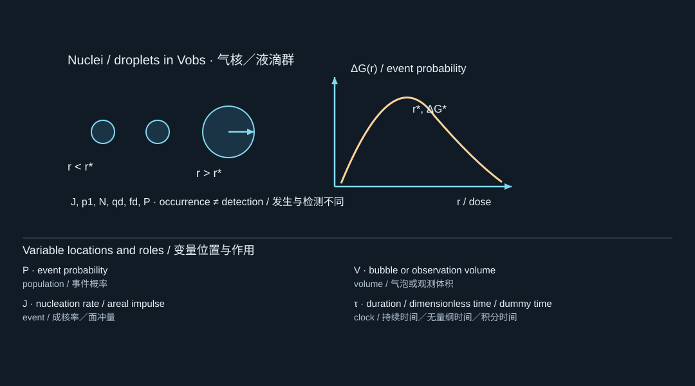
The diagram locates the physical system; its key lists the symbols in the formula. Read the definition in the surrounding derivation when a letter has different roles.
图示标出物理体系，图例列出公式中的符号。若某字母有多种作用，应以邻近推导中的定义为准。
Solution. implies . Doubling volume gives . A threshold defined by a fixed event probability therefore shifts when observation volume changes, even if the microscopic rate law does not.
解答。由得。体积加倍后，。因此，即使微观速率定律不变，以固定事件概率定义的阈值也会随观测体积变化。
16.7 Long-time inertial growth speed
长时间惯性增长速度
Problem. Under constant positive internal-minus-external driving pressure , neglect all losses and gas-law changes. What constant-speed asymptote is compatible with the radial equation?
题目。在恒定正内外驱动压差下，忽略全部损失和气体定律变化，什么恒速渐近值与径向方程相容？
Reference answer · original problem 7 / 原题参考答案
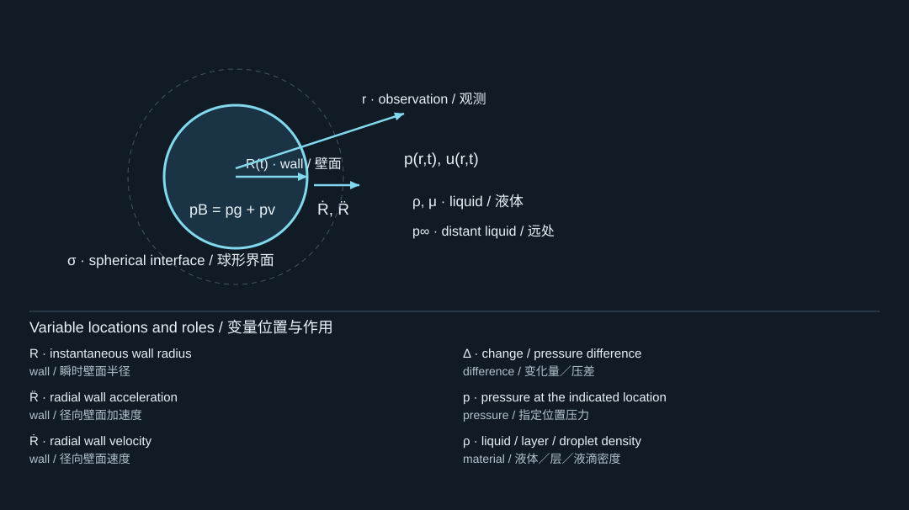
The diagram locates the physical system; its key lists the symbols in the formula. Read the definition in the surrounding derivation when a letter has different roles.
图示标出物理体系，图例列出公式中的符号。若某字母有多种作用，应以邻近推导中的定义为准。
Solution. Set in . Then . For and , this is . The result assumes the driving pressure remains available; it does not apply to a fixed gas mass whose pressure falls as the bubble grows.
解答。在中令，得到。取和，可得。该结果假定驱动压差始终存在，不适用于压力随膨胀下降的固定质量气体。
16.8 Collapse-time scaling
塌缩时间尺度
Problem. Starting from the 100-micrometer example, determine the collapse time after doubling maximum radius, or after quadrupling driving pressure while keeping radius fixed.
题目。以100微米示例为基准，分别求最大半径加倍，以及半径不变而驱动压差增至四倍时的塌缩时间。
Reference answer · original problem 8 / 原题参考答案
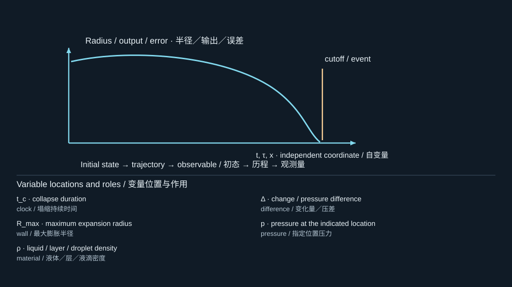
The diagram locates the physical system; its key lists the symbols in the formula. Read the definition in the surrounding derivation when a letter has different roles.
图示标出物理体系，图例列出公式中的符号。若某字母有多种作用，应以邻近推导中的定义为准。
Solution. Since , the first change gives , and the second gives . Under independent small uncertainties, . Correlated uncertainties require covariance terms.
解答。由，第一种变化得到，第二种得到。对于独立小不确定度，有。若误差相关，还需加入协方差项。
16.9 Speed at half maximum radius
半最大半径处的速度
Problem. Find the inward wall speed when an ideal Rayleigh cavity has contracted to under the teaching pressure difference.
题目。在教学压差下，理想Rayleigh空腔收缩至时，求界面向内速度。
Reference answer · original problem 9 / 原题参考答案
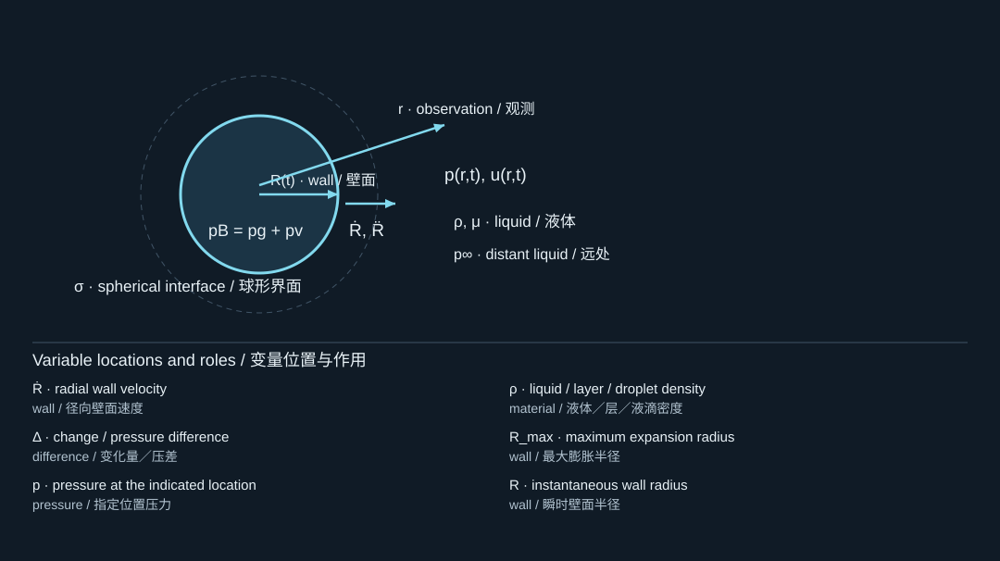
The diagram locates the physical system; its key lists the symbols in the formula. Read the definition in the surrounding derivation when a letter has different roles.
图示标出物理体系，图例列出公式中的符号。若某字母有多种作用，应以邻近推导中的定义为准。
Solution. Equation (5.2) gives . The value is independent of in this scale-free idealization at a fixed radius ratio. Collapse time, however, remains proportional to .
解答。式(5.2)给出。在这一无额外长度尺度的理想化中，固定半径比处的速度与无关，但塌缩时间仍与成正比。
16.10 When the incompressible collapse becomes suspect
不可压缩塌缩何时值得怀疑
Problem. Use the Rayleigh speed to find when for the teaching values.
题目。利用Rayleigh速度关系，求教学参数下时的。
Reference answer · original problem 10 / 原题参考答案
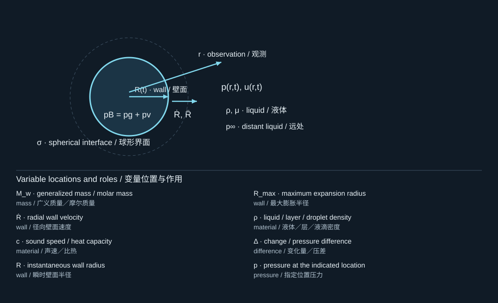
The diagram locates the physical system; its key lists the symbols in the formula. Read the definition in the surrounding derivation when a letter has different roles.
图示标出物理体系，图例列出公式中的符号。若某字母有多种作用，应以邻近推导中的定义为准。
Solution. Rearranging (5.2) gives . Therefore a numerical collapse continued to is already outside this conservative physical warning level. It can still be used as a mathematical benchmark of the incompressible equation, but not as a credible physical late-collapse trajectory.
解答。整理式(5.2)得。因此，将塌缩继续积分至，已经超出这一保守物理警戒范围。它仍可作为不可压缩方程的数学基准，但不能作为可信的真实塌缩末期轨迹。
16.11 Static compliance of a microbubble
微气泡的静态柔度
Problem. Estimate the relative radius change of the 10-micrometer reference bubble under a slowly applied additional pressure of 1000 Pa, using the code's polytropic closure.
题目。在配套代码的多方闭合下，估计10微米参考气泡在缓慢增加1000 Pa压力后的相对半径变化。
Reference answer · original problem 11 / 原题参考答案
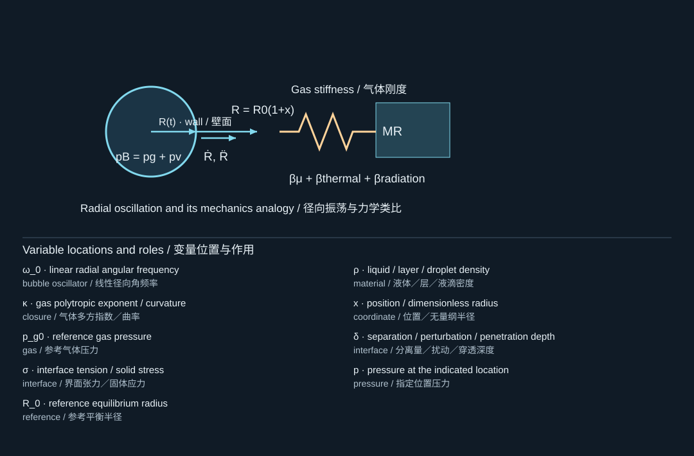
The diagram locates the physical system; its key lists the symbols in the formula. Read the definition in the surrounding derivation when a letter has different roles.
图示标出物理体系，图例列出公式中的符号。若某字母有多种作用，应以邻近推导中的定义为准。
Solution. Set time derivatives to zero in (6.1): . The radius decreases by approximately . A truly slow physical experiment may be closer to isothermal than the code's ; the calculation is conditional on the stated closure.
解答。在式(6.1)中令时间导数为零，得，半径约减少。真实缓慢实验可能比代码中的更接近等温；此计算以所指定闭合为条件。
16.12 Viscosity versus stiffness
黏度与刚度
Problem. If viscosity doubles while all other parameters stay fixed, what changes in the linear model?
题目。如果黏度加倍而其他参数不变，线性模型中哪些量发生变化？
Reference answer · original problem 12 / 原题参考答案
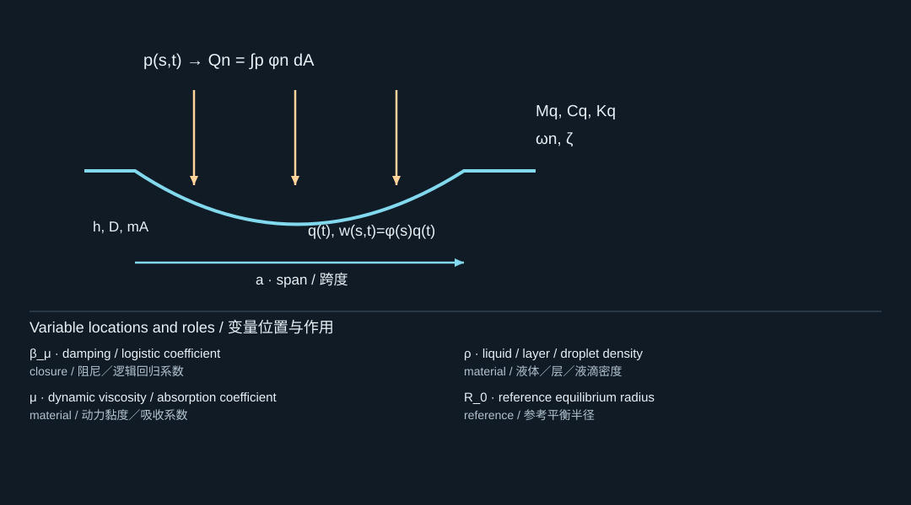
The diagram locates the physical system; its key lists the symbols in the formula. Read the definition in the surrounding derivation when a letter has different roles.
图示标出物理体系，图例列出公式中的符号。若某字母有多种作用，应以邻近推导中的定义为准。
Solution. doubles, while the undamped in (6.2) is unchanged. The damped free frequency and forced-response peak can still change because they depend on damping. Thus “viscosity does not change frequency” is only correct when referring specifically to the undamped stiffness-to-mass frequency.
解答。加倍，而式(6.2)中的无阻尼不变。但有阻尼自由频率和受迫响应峰值位置仍可能改变，因为它们依赖阻尼。因此，“黏度不改变频率”仅在专指由刚度与质量决定的无阻尼频率时成立。
16.13 The isothermal gas potential
等温气体势
Problem. Derive the mechanical potential associated with .
题目。推导与对应的力学势。
Reference answer · original problem 13 / 原题参考答案
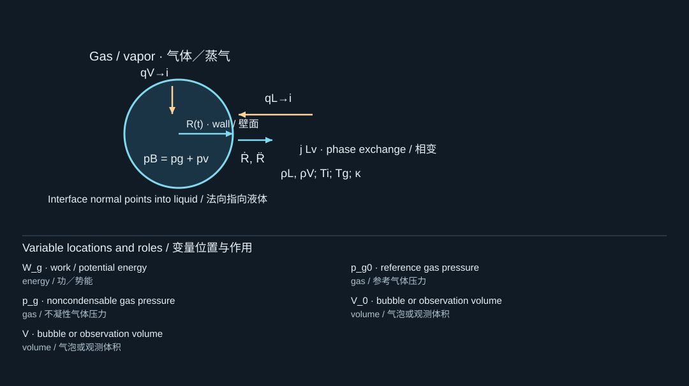
The diagram locates the physical system; its key lists the symbols in the formula. Read the definition in the surrounding derivation when a letter has different roles.
图示标出物理体系，图例列出公式中的符号。若某字母有多种作用，应以邻近推导中的定义为准。
Solution. A reversible potential satisfies . Integrating gives . For an isothermal ideal gas, internal energy is constant; this logarithmic expression is therefore not the gas internal energy. It is the mechanical potential appropriate to the prescribed pressure law and thermal reservoir.
解答。可逆势满足，积分得。等温理想气体的内能恒定，因此这个对数表达式不是气体内能，而是与所指定压力定律及热库相对应的力学势。
16.14 The hidden acceleration in Keller–Miksis
Keller–Miksis中的隐藏加速度
Problem. Why does viscosity appear in the denominator of (7.3)?
题目。为什么黏度会出现在式(7.3)的分母中？
Reference answer · original problem 14 / 原题参考答案
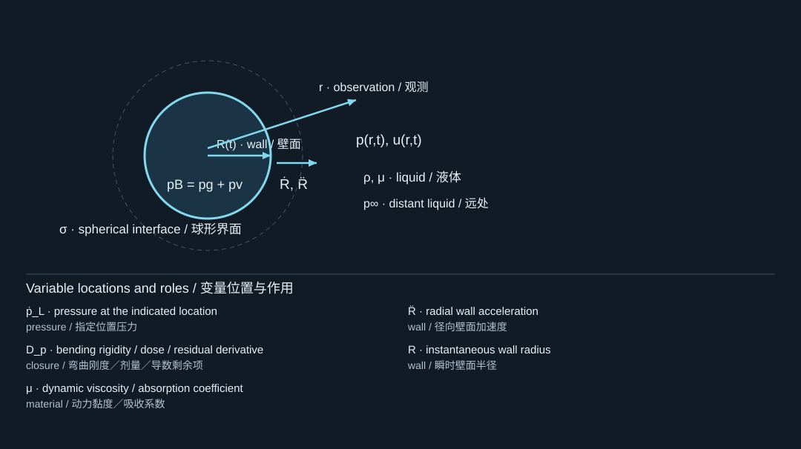
The diagram locates the physical system; its key lists the symbols in the formula. Read the definition in the surrounding derivation when a letter has different roles.
图示标出物理体系，图例列出公式中的符号。若某字母有多种作用，应以邻近推导中的定义为准。
Solution. The liquid-side pressure contains . Differentiation contributes . Multiplication by in (7.1) gives on the right. Moving it to the left adds to the coefficient of . The effect is algebraically required, not an empirical correction.
解答。液侧压力包含，求导产生。在式(7.1)中乘以后，右端出现。将其移到左端，就使的系数增加。这一项由代数必然产生，并非经验修正。
16.15 Radial frequency versus shape frequency
径向频率与形状频率
Problem. Find the static shape frequency for a 10-micrometer bubble and compare it with the radial frequency.
题目。求10微米气泡的静态形状频率，并与径向频率比较。
Reference answer · original problem 15 / 原题参考答案
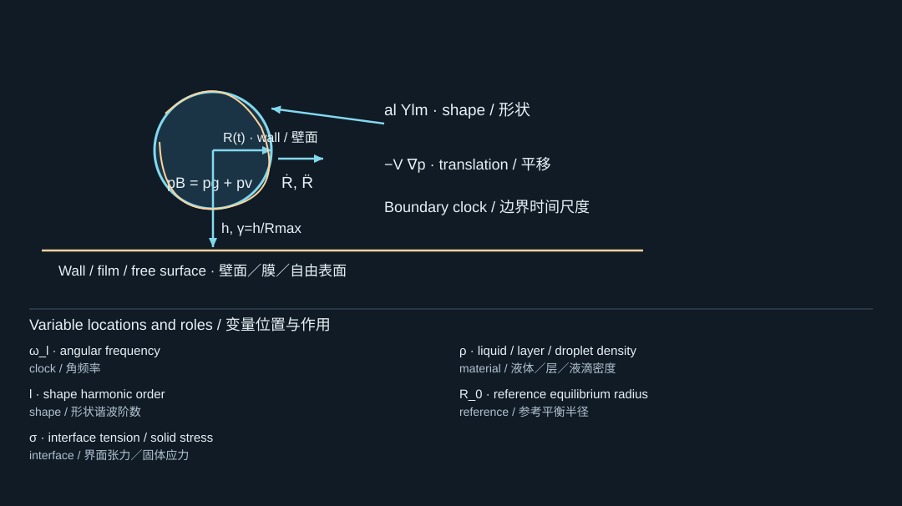
The diagram locates the physical system; its key lists the symbols in the formula. Read the definition in the surrounding derivation when a letter has different roles.
图示标出物理体系，图例列出公式中的符号。若某字母有多种作用，应以邻近推导中的定义为准。
Solution. Equation (8.1) gives , compared with for the radial mode under the teaching gas closure. Different deformation families have different restoring mechanisms. A single measured oscillation frequency should not be assigned to radial motion without checking the shape.
解答。由式(8.1)，，而教学气体闭合下径向频率为。不同变形类型具有不同回复机制。若未检查形状，就不能把某个实测振荡频率直接认定为径向振动。
16.16 A uniform pressure impulse
均匀压力冲量
Problem. Does a spatially uniform scalar pressure impulse create a velocity jump in an unbounded incompressible liquid?
题目。空间均匀的标量压力冲量，是否会在无界不可压缩液体中产生速度跃变？
Reference answer · original problem 16 / 原题参考答案
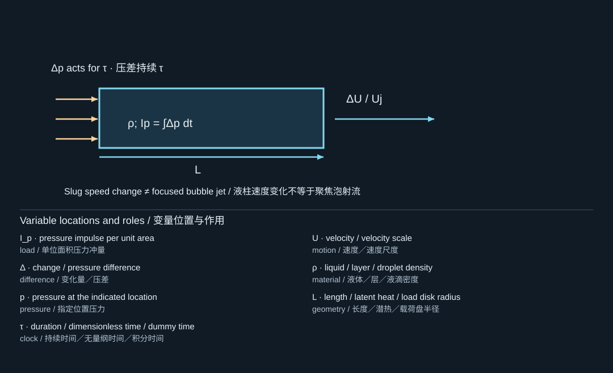
The diagram locates the physical system; its key lists the symbols in the formula. Read the definition in the surrounding derivation when a letter has different roles.
图示标出物理体系，图例列出公式中的符号。若某字母有多种作用，应以邻近推导中的定义为准。
Solution. Not through (9.1), because . Boundaries, interfaces, or nonuniform loading are needed to generate the relevant pressure gradients. This does not say that uniform pressure on one side of a plate produces no force; that is a different boundary-value problem with a pressure difference across the structure.
解答。按式(9.1)不会，因为。需要边界、界面或非均匀加载形成相关压力梯度。这并不是说板一侧的均匀压力不产生力；后者是结构两侧存在压差的另一类边值问题。
16.17 Equal impulse, zero residual oscillation
相同冲量却无残余振动
Problem. For the undamped modal problem, what happens after a rectangular force pulse with ?
题目。对于无阻尼模态问题，若矩形力脉冲满足，脉冲结束后会怎样？
Reference answer · original problem 17 / 原题参考答案
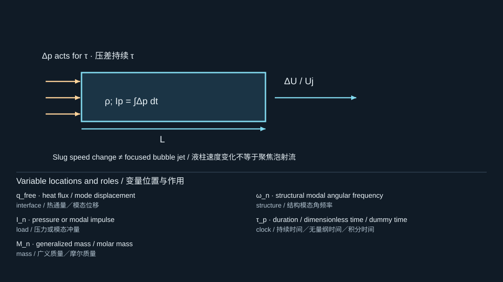
The diagram locates the physical system; its key lists the symbols in the formula. Read the definition in the surrounding derivation when a letter has different roles.
图示标出物理体系，图例列出公式中的符号。若某字母有多种作用，应以邻近推导中的定义为准。
Solution. Equation (12.3) gives zero post-pulse free amplitude, because . The mode moved during the pulse; it did not remain stationary. The force first supplied and later recovered energy over one full oscillation. This is a counterexample to predicting structural response from total impulse alone when pulse duration is not negligible.
解答。式(12.3)给出脉冲后自由振幅为零，因为。模态在脉冲期间发生过运动，并不是始终静止。外力在完整振动周期内先输入能量，再回收能量。这说明当脉冲时长不可忽略时，不能只凭总冲量预测结构响应。
16.18 A necessary adhesion-energy scale
黏附能的必要尺度
Problem. Use and to estimate the idealized velocity and pressure impulse required by the areal kinetic-energy comparison.
题目。取和，用面动能比较估计理想化速度与压力冲量。
Reference answer · original problem 18 / 原题参考答案
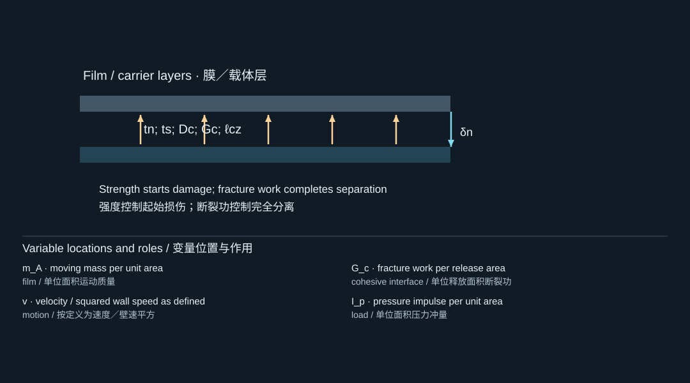
The diagram locates the physical system; its key lists the symbols in the formula. Read the definition in the surrounding derivation when a letter has different roles.
图示标出物理体系，图例列出公式中的符号。若某字母有多种作用，应以邻近推导中的定义为准。
Solution. , and . These are not sufficient detachment thresholds. The estimate assumes all relevant kinetic energy becomes separation work and ignores bending, added liquid inertia, flaws, mode mix, and incomplete load coverage.
解答。，且。这些数值不是充分脱离阈值。该估计假定相关动能全部转为分离功，并忽略弯曲、液体附加惯性、缺陷、混合模态和载荷覆盖不完整等因素。
16.19 Droplet expansion by mass conservation
由质量守恒估计液滴膨胀
Problem. For a hypothetical pure volatile liquid with , , , and , estimate under complete ideal vaporization.
题目。对于一种假想纯挥发性液体，取、、和，在完全理想汽化假设下估计。
Reference answer · original problem 19 / 原题参考答案
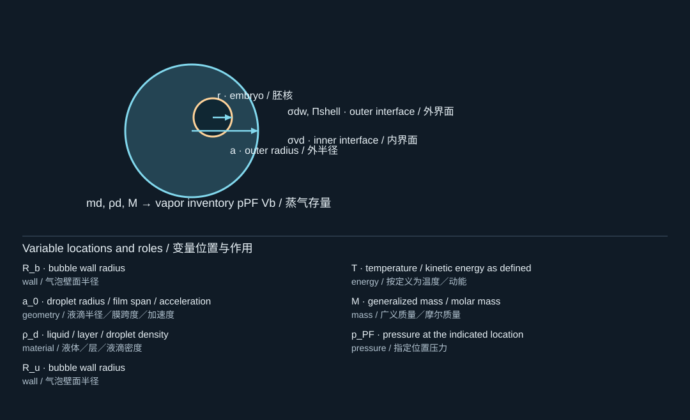
The diagram locates the physical system; its key lists the symbols in the formula. Read the definition in the surrounding derivation when a letter has different roles.
图示标出物理体系，图例列出公式中的符号。若某字母有多种作用，应以邻近推导中的定义为准。
Solution. Equation (11.1) gives , corresponding to a volume ratio of about 133.0. This calculation provides no evidence that sufficient heat exists to complete vaporization. The parameters deliberately do not identify a measured PFC formulation.
解答。式(11.1)给出，对应体积比约133.0。这个计算并不能证明体系具有足够热量完成汽化。所列参数有意不对应任何已测量的特定全氟碳配方。
16.20 Geometrical spreading of acoustic energy
声能的几何扩散
Problem. In the linear outgoing-wave approximation, if observation distance doubles, how do pressure amplitude and the integrated spherical acoustic-energy estimate change?
题目。在线性出射波近似下，观测距离加倍时，压力振幅和球面声能积分估计如何变化？
Reference answer · original problem 20 / 原题参考答案
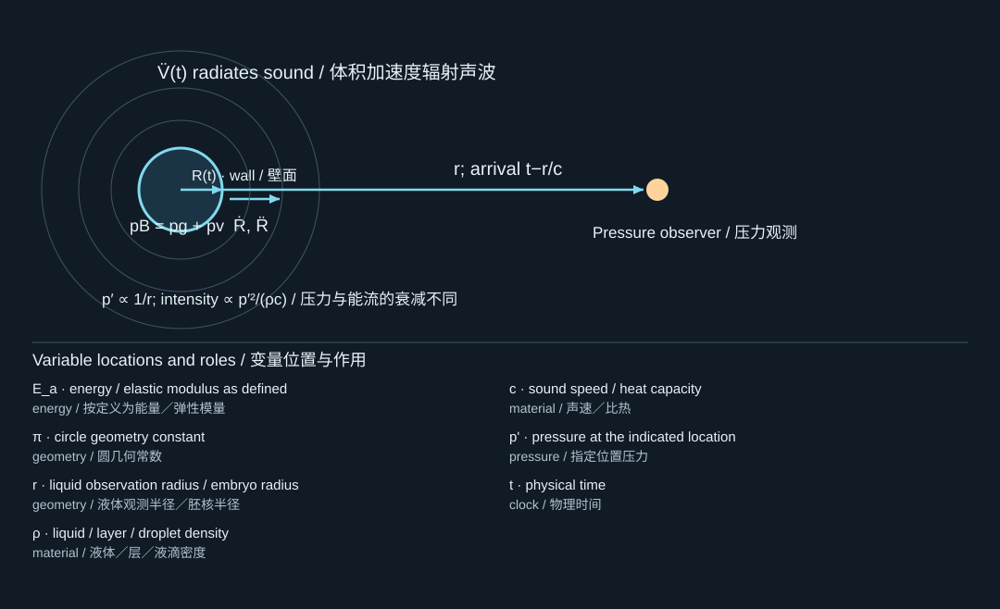
The diagram locates the physical system; its key lists the symbols in the formula. Read the definition in the surrounding derivation when a letter has different roles.
图示标出物理体系，图例列出公式中的符号。若某字母有多种作用，应以邻近推导中的定义为准。
Solution. Pressure amplitude halves because . The sphere area increases by four, while decreases by four, so (7.8) remains unchanged in the absence of absorption. This reasoning fails if near-field terms, reflections, nonlinear dissipation, or sensor averaging dominate.
解答。由于，压力振幅减半。球面积增至四倍，而减至四分之一，因此无吸收时式(7.8)保持不变。如果近场项、反射、非线性耗散或传感器平均效应占主导，这个推理就会失效。
16.21 A false temperature prediction
错误的温度预测
Problem. A student extrapolates to arbitrarily small and reports the result as an experimental collapse temperature. Diagnose the mistake.
题目。某同学将外推至任意小，并把结果报告为实验塌缩温度。错误在哪里？
Reference answer · original problem 21 / 原题参考答案
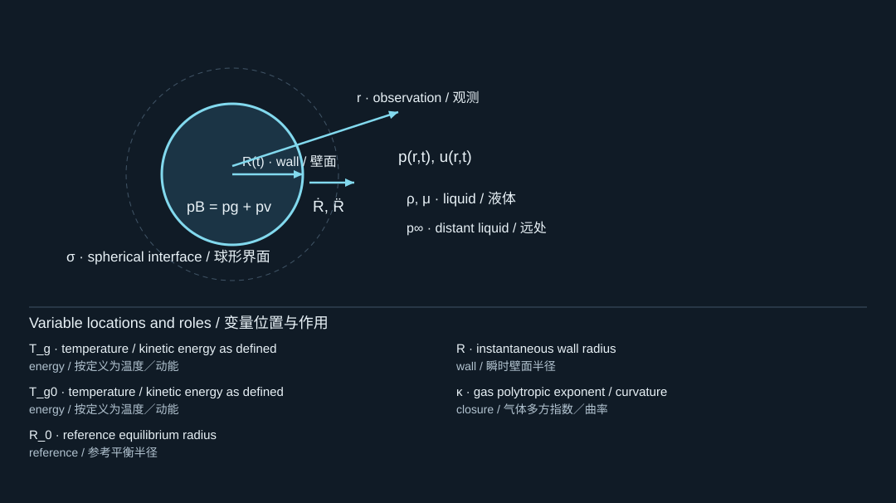
The diagram locates the physical system; its key lists the symbols in the formula. Read the definition in the surrounding derivation when a letter has different roles.
图示标出物理体系，图例列出公式中的符号。若某字母有多种作用，应以邻近推导中的定义为准。
Solution. The expression presumes a fixed-mass ideal gas and a specified polytropic process. At severe collapse, gas nonideality, phase change, thermal gradients, compressibility, chemistry, and nonsphericity may invalidate those premises. Even a valid model output is not an experimental measurement. The correct report labels it a conditional estimate and gives the model's validity limits.
解答。该表达式预设固定质量理想气体与指定多方过程。剧烈塌缩时，气体非理想性、相变、温度梯度、可压缩性、化学过程和非球形性都可能使这些前提失效。即使模型输出有效，它也不是实验测量。正确报告应将其标为条件性估计，并说明模型适用范围。
16.22 A mesh-convergence calculation
网格收敛计算
Problem. A scalar output is 1.00, 0.92, and 0.90 on meshes . Assuming a clean asymptotic error , estimate and .
题目。某标量输出在网格上分别为1.00、0.92和0.90。假设具有清晰渐近误差，估计和。
Reference answer · original problem 22 / 原题参考答案
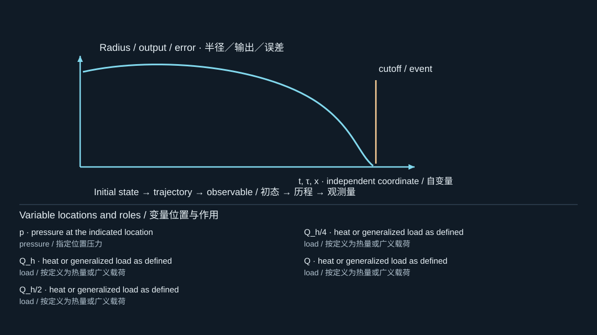
The diagram locates the physical system; its key lists the symbols in the formula. Read the definition in the surrounding derivation when a letter has different roles.
图示标出物理体系，图例列出公式中的符号。若某字母有多种作用，应以邻近推导中的定义为准。
Solution. , so . Richardson extrapolation gives . The inference is conditional on the asymptotic model. Interface topology changes, stochastic nucleation, and unresolved shock peaks can make three-grid extrapolation misleading.
解答。，因此。Richardson外推得。这一推断依赖渐近误差模型；界面拓扑变化、随机成核和未解析激波峰值，都可能使三网格外推产生误导。
16.23 A nonidentifiable gas parameterization
不可辨识的气体参数化
Problem. Suppose the gas law is written with fixed . Can a radius trajectory independently determine and when only their product enters the model?
题目。气体定律写为，且固定。如果模型中只出现乘积，半径轨迹能否独立确定与？
Reference answer · original problem 23 / 原题参考答案
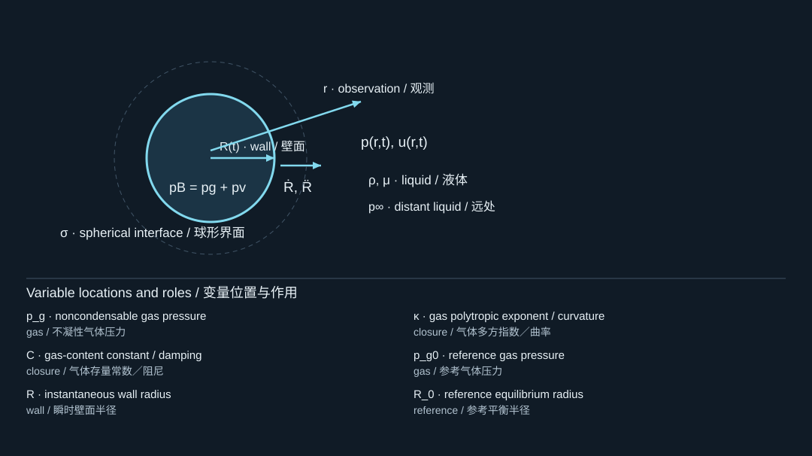
The diagram locates the physical system; its key lists the symbols in the formula. Read the definition in the surrounding derivation when a letter has different roles.
图示标出物理体系，图例列出公式中的符号。若某字母有多种作用，应以邻近推导中的定义为准。
Solution. No. Infinitely many pairs yield the same and hence the same pressure law. An additional equilibrium relation or independent measurement is needed. An optimizer returning two precise-looking numbers does not remove this structural nonidentifiability.
解答。不能。无穷多组参数都能给出相同，从而产生相同压力定律。需要附加平衡关系或独立测量。优化器即使返回两个看似精确的数值，也不能消除这种结构性不可辨识。
16.24 Why more frames do not automatically fix acceleration
为什么更多图像帧不自动解决加速度问题
Problem. If independent radius noise remains fixed while sampling interval halves, how does the noise scale in a naive second difference?
题目。如果独立半径噪声保持不变，而采样间隔减半，简单二阶差分中的噪声尺度如何变化？
Reference answer · original problem 24 / 原题参考答案
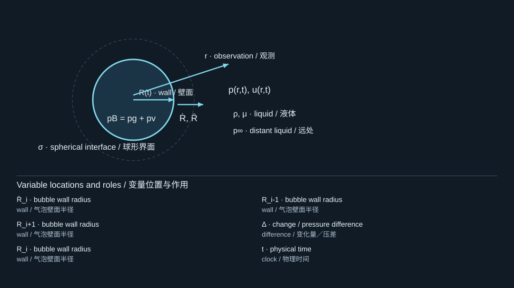
The diagram locates the physical system; its key lists the symbols in the formula. Read the definition in the surrounding derivation when a letter has different roles.
图示标出物理体系，图例列出公式中的符号。若某字母有多种作用，应以邻近推导中的定义为准。
Solution. It grows by a factor of four because the denominator is proportional to . Higher temporal resolution is valuable, but acceleration estimation needs an appropriate observation model, smoothing with quantified bias, or direct fitting of a dynamical model. Do not confuse temporal resolution with derivative precision.
解答。由于分母与成正比，噪声尺度增大至四倍。更高时间分辨率仍然有价值，但加速度估计需要适当观测模型、偏差可量化的平滑方法，或直接拟合动力学模型。不要将时间分辨率与导数精度混为一谈。
16.25 Source-mechanism classification
源机制分类
Problem. Classify [S390], [S72], [S343], and [S340] by their principal route to mechanical loading.
题目。按照主要机械加载路径，对[S390]、[S72]、[S343]和[S340]分类。
Reference answer · original problem 25 / 原题参考答案
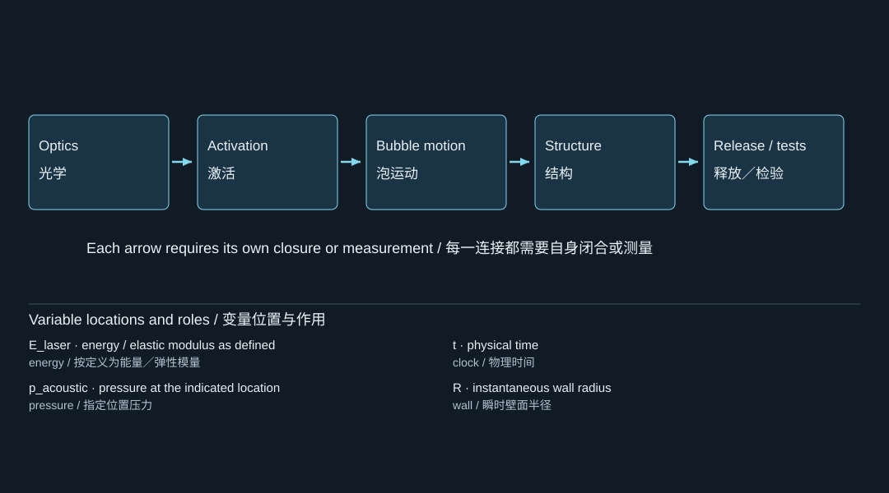
The diagram locates the physical system; its key lists the symbols in the formula. Read the definition in the surrounding derivation when a letter has different roles.
图示标出物理体系，图例列出公式中的符号。若某字母有多种作用，应以邻近推导中的定义为准。
Solution. [S390]: optoacoustic transmitter, focused ultrasound, nucleation, and liquid jetting. [S72]: photothermal phase change inside a hydrogel-composite stamp, surface bulging, and adhesion modification. [S343]: blister motion coupled to cavitation in a liquid-transfer setting. [S340]: stress-wave-mediated thin-film delamination. The common presence of a laser does not make the four source models interchangeable.
解答。[S390]：光声发射器、聚焦超声、成核与液体喷射。[S72]：水凝胶复合印章内部光热相变、表面鼓起与黏附改变。[S343]：液体转移环境中鼓包运动与空化耦合。[S340]：应力波介导的薄膜分层。共同使用激光，并不使四种源模型可以相互替代。
16.26 A terminology audit
术语审查
Problem. Why is it wrong to cite [S371] directly as evidence for a vapor-cavitation nucleation threshold?
题目。为什么不能直接引用[S371]作为蒸气空化成核阈值的证据？
Reference answer · original problem 26 / 原题参考答案
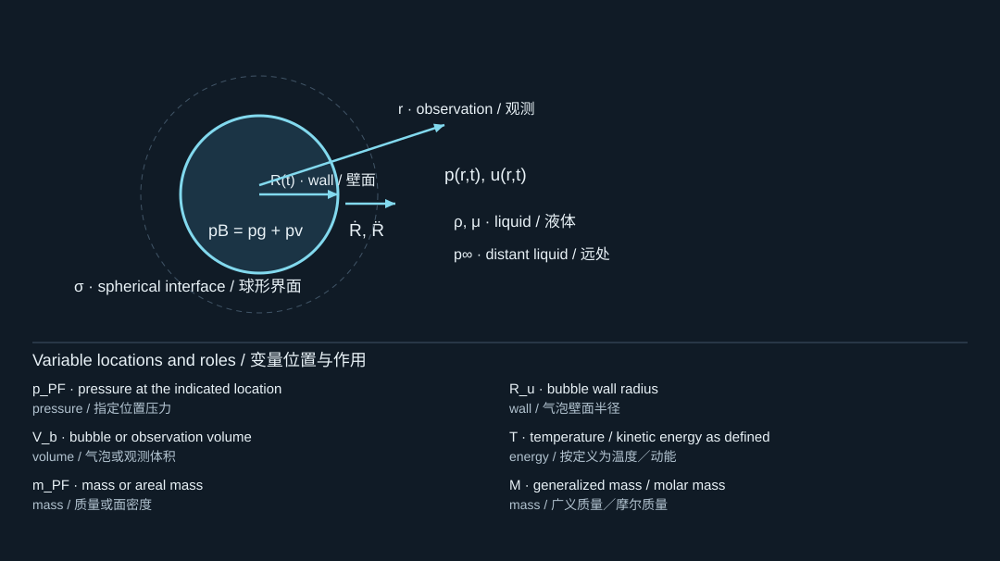
The diagram locates the physical system; its key lists the symbols in the formula. Read the definition in the surrounding derivation when a letter has different roles.
图示标出物理体系，图例列出公式中的符号。若某字母有多种作用，应以邻近推导中的定义为准。
Solution. Its nucleation process forms liquid perfluorocarbon droplets through solvent exchange. The new phase and free-energy problem differ from vapor embryos forming in a liquid. A relevant title word is not enough; phase identity and process must match the claim.
解答。该文的成核过程通过溶剂交换形成液态全氟碳液滴。其新生相与自由能问题，不同于液体中形成蒸气胚核的过程。标题中存在相同关键词并不足够，物相与过程必须和论点匹配。
16.27 Detect an overconstrained interface
识别过度约束界面
Problem. In a fluid simulation, both a bubble radius history and an unrelated bubble pressure history are prescribed on the same interface. Why is this dangerous?
题目。在流体仿真中，同一界面同时指定气泡半径历程和一个无关的气泡压力历程，为什么危险？
Reference answer · original problem 27 / 原题参考答案
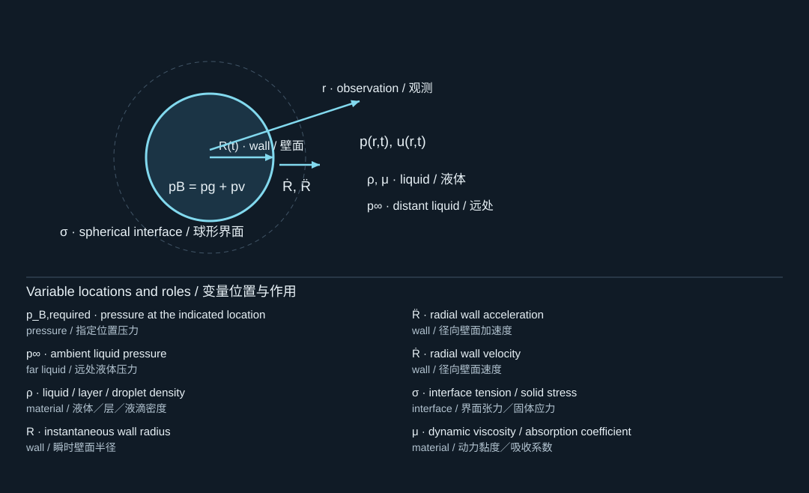
The diagram locates the physical system; its key lists the symbols in the formula. Read the definition in the surrounding derivation when a letter has different roles.
图示标出物理体系，图例列出公式中的符号。若某字母有多种作用，应以邻近推导中的定义为准。
Solution. The motion and traction are linked by the fluid equations. Prescribing both independently usually overconstrains the boundary or injects energy inconsistent with either physical source. Prescribe kinematics and calculate reaction pressure, or prescribe a thermodynamic pressure law and solve for motion, unless a carefully formulated coupling supplies a consistent relation.
解答。运动与牵引通过流体方程相联系。独立指定二者通常会使边界过度约束，或注入与任何真实源都不一致的能量。除非具有严格相容的耦合关系，否则应指定运动学并计算反作用压力，或指定热力学压力定律并求解运动。
16.28 Avoid double-counting fluid inertia
避免重复计算流体惯性
Problem. A fully coupled fluid–structure model already resolves the water next to a film. A researcher also adds a hydrodynamic added mass to the film density. What should be checked?
题目。完整流固耦合模型已经解析薄膜旁的水域，研究者又给薄膜密度加上水动力附加质量。应该检查什么？
Reference answer · original problem 28 / 原题参考答案
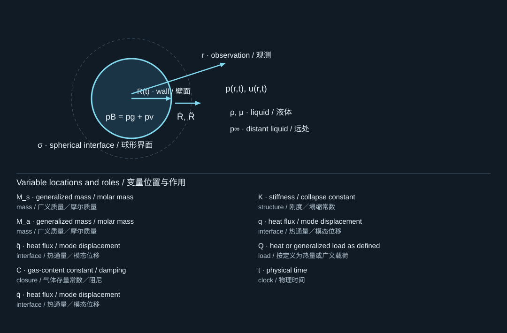
The diagram locates the physical system; its key lists the symbols in the formula. Read the definition in the surrounding derivation when a letter has different roles.
图示标出物理体系，图例列出公式中的符号。若某字母有多种作用，应以邻近推导中的定义为准。
Solution. Determine whether the added mass represents liquid already included in the solved fluid domain. If so, it is double-counted. Added-mass corrections belong to reduced models or omitted fluid regions, with a clearly defined partition. A coupled model should recover a known wet-versus-dry structural benchmark without arbitrary duplicate inertia.
解答。应判断附加质量是否表示已包含在求解流体域中的液体。如果是，就发生了重复计算。附加质量修正应当用于降阶模型或被省略的流体区域，并明确划分。耦合模型应能在没有任意重复惯性的情况下复现已知干态与浸液结构基准。
16.29 Design a discriminating experiment
设计具有区分能力的实验
Problem. Two models fit maximum bubble radius equally well, but one assumes constant vapor pressure and the other finite-rate thermal transport. Suggest a more discriminating measurement.
题目。两个模型同样准确地拟合最大气泡半径，但一个假设蒸气压恒定，另一个包含有限速率热输运。建议一种更有区分能力的测量。
Reference answer · original problem 29 / 原题参考答案
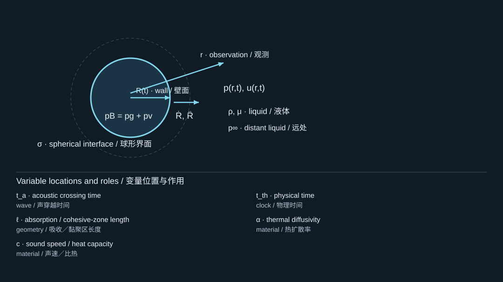
The diagram locates the physical system; its key lists the symbols in the formula. Read the definition in the surrounding derivation when a letter has different roles.
图示标出物理体系，图例列出公式中的符号。若某字母有多种作用，应以邻近推导中的定义为准。
Solution. Compare full growth and collapse histories, rebound radius and period, and their variation with independently controlled ambient temperature or pulse duration. A single extra peak is less informative than a controlled family of trajectories. Fit shared parameters on one subset and test on held-out conditions; do not refit every trace independently and call the result prediction.
解答。可比较完整增长与塌缩历程、回弹半径和周期，以及它们随独立控制的环境温度或脉冲时长的变化。相比只增加一个峰值，受控的一组轨迹更有信息。应在部分数据上拟合共享参数，再在留出条件上检验；不要对每条曲线分别重新拟合后仍称之为预测。
16.30 Build a falsifiable capstone study
构建可证伪综合研究
Problem. Propose a minimal study of the hypothesis that matching bubble-loading time to a film mode improves useful payload motion.
题目。针对“使气泡加载时间匹配薄膜模态可改善有效负载运动”的假设，提出最小研究方案。
Reference answer · original problem 30 / 原题参考答案
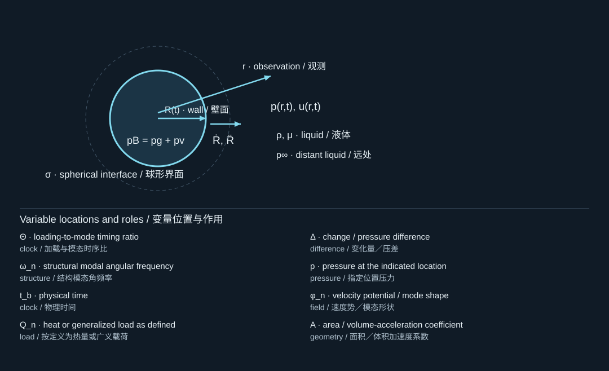
The diagram locates the physical system; its key lists the symbols in the formula. Read the definition in the surrounding derivation when a letter has different roles.
图示标出物理体系，图例列出公式中的符号。若某字母有多种作用，应以邻近推导中的定义为准。
Solution. Fix geometry, support, payload mass, and a declared source normalization such as fixed volume excursion or fixed work. Sweep loading duration; measure or calculate mode-projected force, payload velocity, bending energy, and losses. Verify the uncoupled oscillator and fluid limit first. Compare at least one held-out duration and one altered support stiffness. A peak in useful motion may support the hypothesis, but only after showing that it is not caused by a hidden change in source energy or by numerical resonance.
解答。固定几何、支承、负载质量，并声明源归一化方式，例如固定体积变化或固定功。扫描加载时长，测量或计算模态投影力、负载速度、弯曲能和损失。首先验证未耦合振子与流体极限，然后至少检验一个留出时长和一个改变支承刚度的条件。有效运动出现峰值可能支持假设，但必须先证明它不是由隐含源能量变化或数值共振引起的。